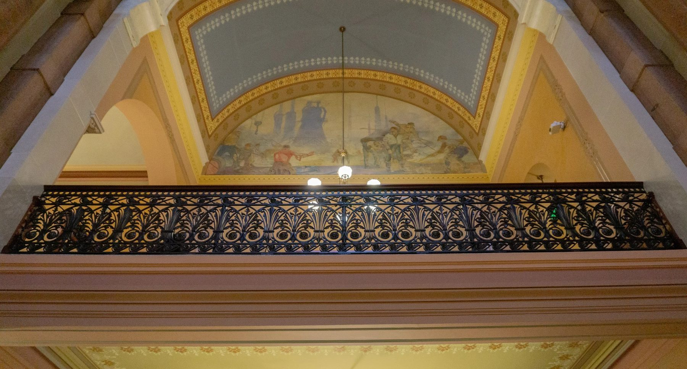
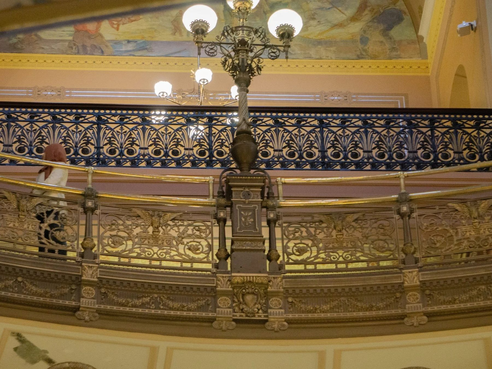
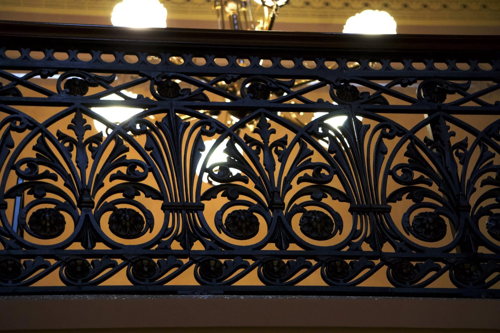
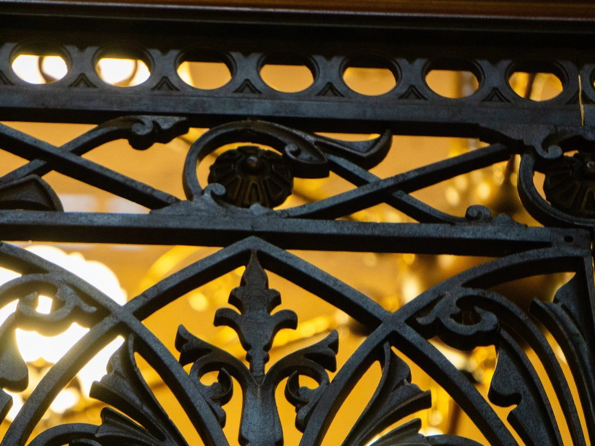
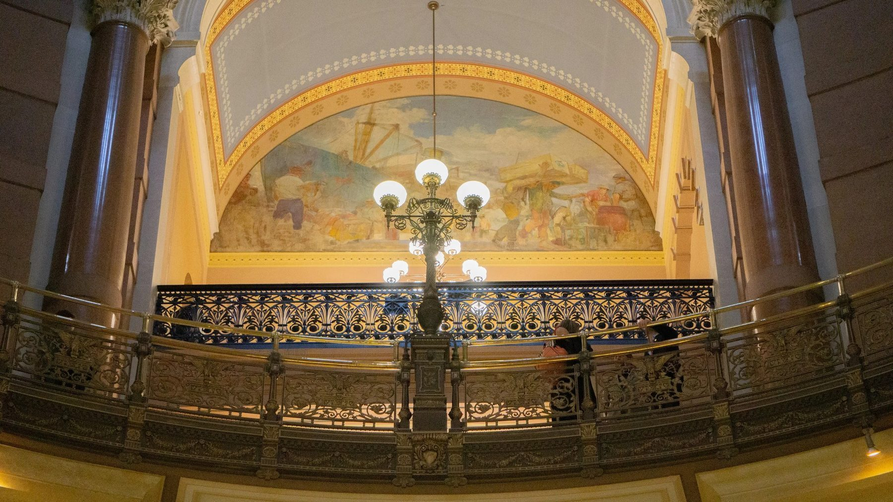
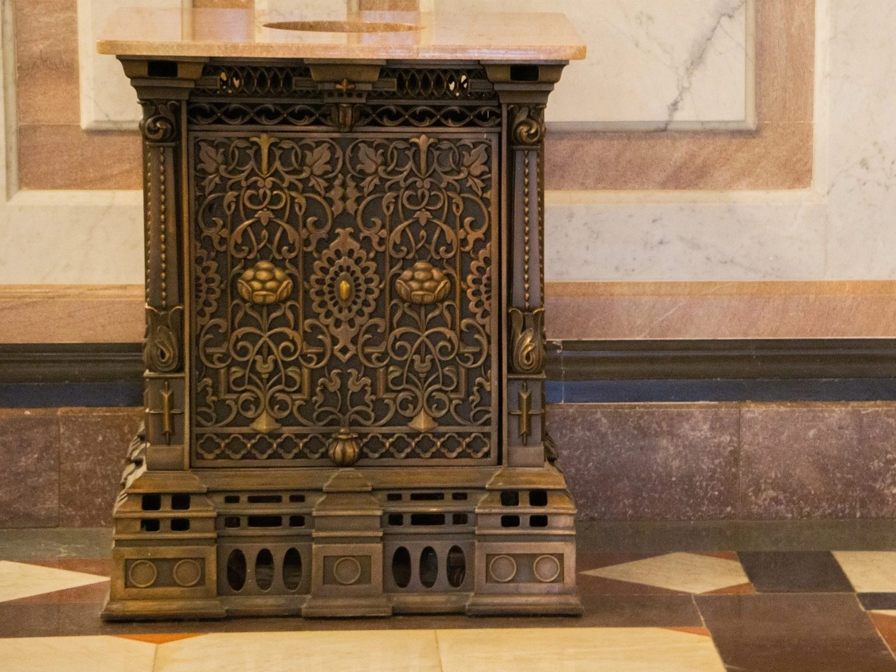
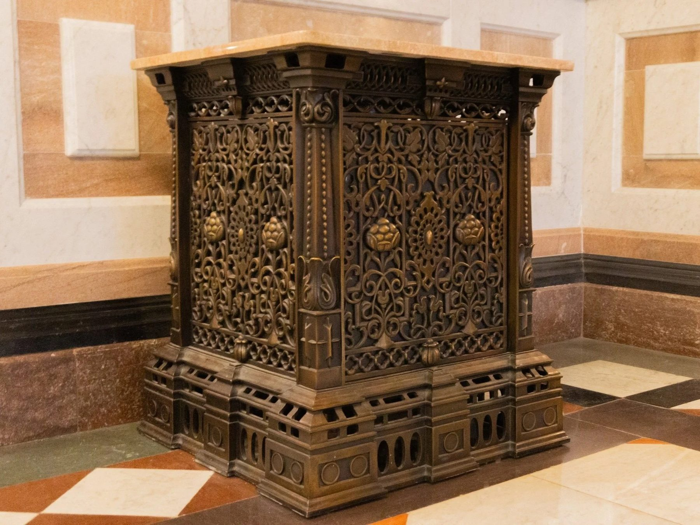

Restoration / 2018
Illinois State Capitol Handrails
Office of the Architect of the Capitol
Circa 1870 iron handrails on the fourth floor gallery, restored and brought to ADA compliance without losing their period character.
After removing layers of failing faux paint and documenting dozens of missing or broken ornamental pieces, we digitally modeled replacement components from archival profiles.
New upper ornamental details and toe kick elements were developed as 3D models, then translated into match plate sand patterns with engineered gating. Masters were 3D printed directly into the pattern boards, molded in resin bonded sand, and cast in iron to integrate with the originals.
For repairs to original rail sections, lost wax reproductions of missing details were produced, assembled, and patinated to match the existing finish.
A custom mill worked wooden handrail cap was fitted atop the ironwork, providing both a crown and the height required for ADA compliance.
Details
- Year
2018 - Location
Springfield, IL - Category
Restoration - Materials
Cast iron, bronze, milled hardwood
Credits
- Office of the Architect of the Capitol
Index







